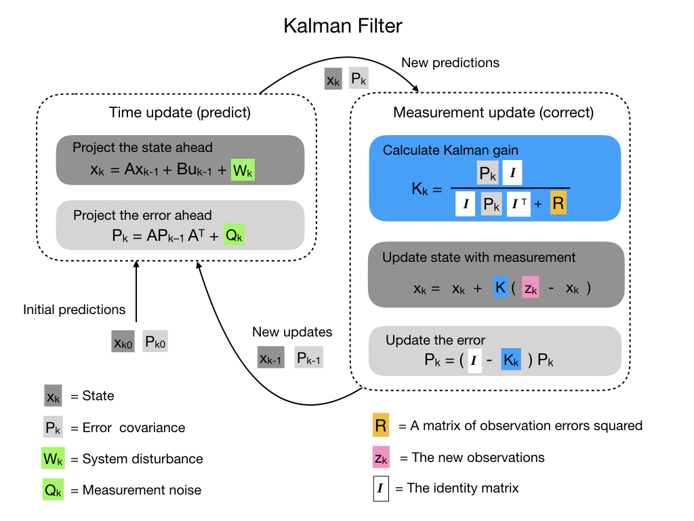
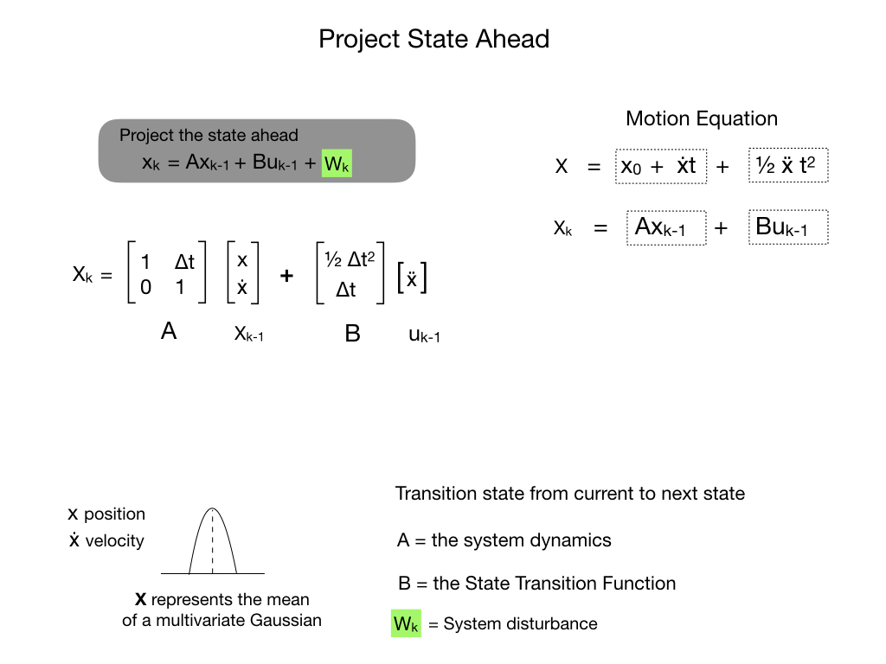
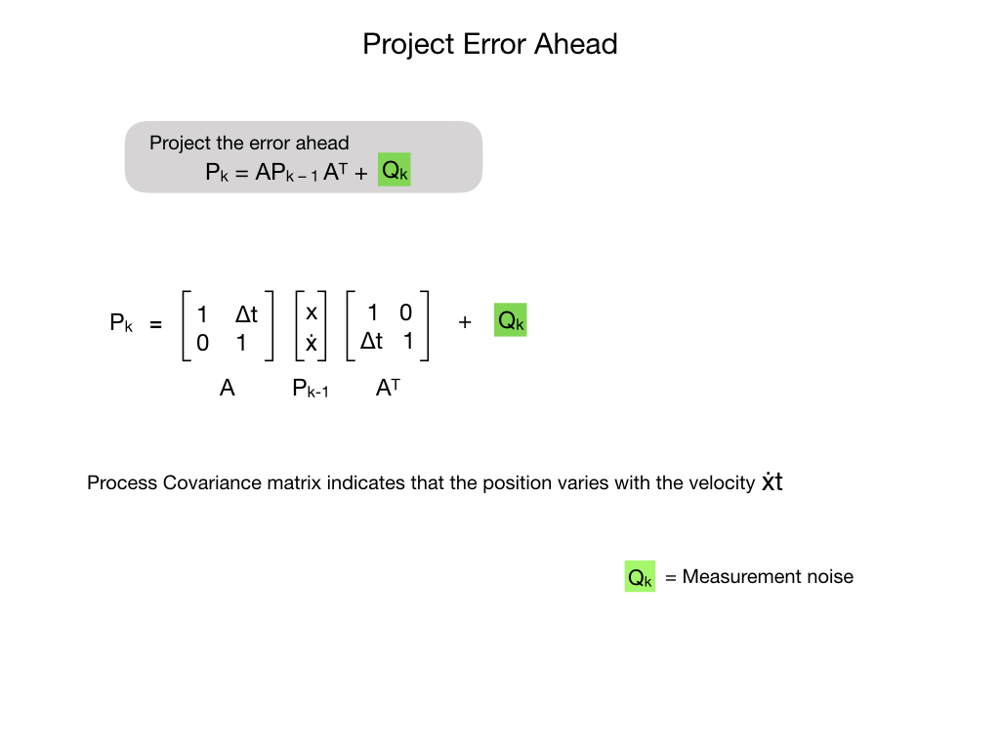
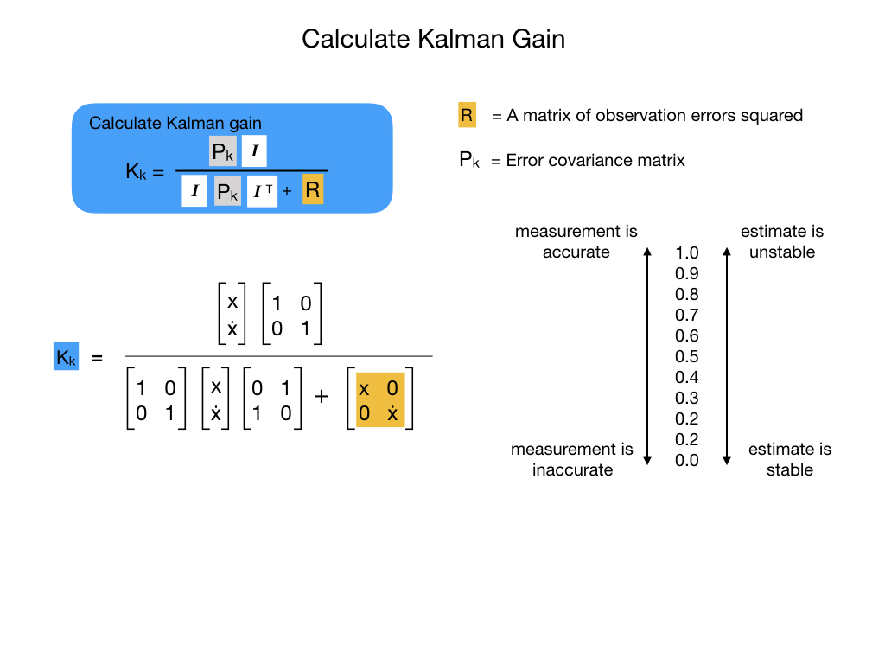
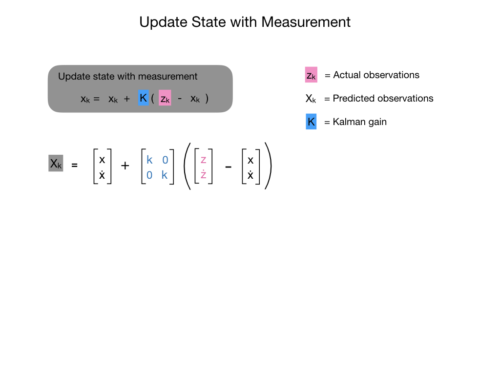
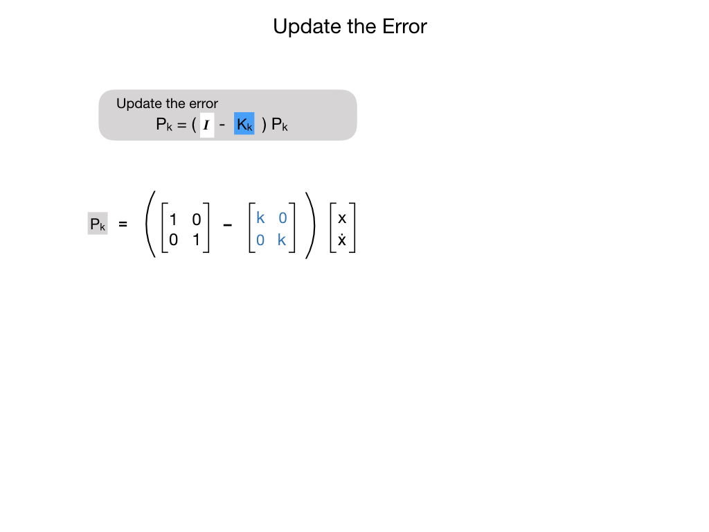

Kalman Filters
Kalman Filters fuse measurements from one or more sensors with a State Space model of the system to optimally estimate a system’s state. Kalman filters have two parts: prediction and correction. Prediction projects our state estimate forward in time according to our system’s dynamics, and correct steers the estimated state towards the measured state.
If you think all that sounds confusing then you’re not alone. Kalman Filters can be difficult to understand and explain, however the site KalmanFilters.net by Alex Becker does an excelent job of it, so you should go there first. The following diagrams will serve as a quick reference for later use.
Here’s all five steps of the Kalman Filter.

In prediction, our state estimate is updated according to the linear system dynamics.





Unscented Kalman Filters
An Unscented Kalman Filter (UKF) is a state estimation algorithm for non-linear systems that uses the unscented transform to approximate the probability distribution of the state through a set of sigma points. Unlike the Extended Kalman Filter (EKF), which relies on linearization and Jacobian calculations, the UKF uses a sampling-based method to capture the effects of non-linear transformations on the state, making it more robust and accurate for highly non-linear systems.
How it Works
Sigma Point Generation: The UKF starts by generating a small set of sigma points around the current state estimate. These points are chosen to represent the mean and covariance of the Gaussian distribution of the state.
Transformation through Nonlinearity: These sigma points are then passed through the system’s non-linear state transition and measurement functions.
Mean and Covariance Reconstruction: The unscented transform reconstructs a new mean and covariance from the transformed sigma points. This captures how the non-linear functions affect the distribution, rather than relying on linear approximations.
Prediction and Correction: Using these new mean and covariance estimates, the UKF performs its prediction and correction steps to update the state estimate of the system.
Key Advantages over EKF
No Jacobian Calculations: The UKF does not require the analytical derivation of complex Jacobians for the non-linear functions.
Better Accuracy: It achieves higher accuracy by capturing the non-linear propagation of the distribution through the system, especially in cases of high non-linearity.
Handles Non-Additive Noise: The UKF can handle non-additive process and measurement noise, unlike the basic Kalman filter.
Models as «Black Boxes»: The non-linear functions can be treated as black boxes, meaning they don’t need to be continuous or differentiable.
When to Use the UKF
The UKF is ideal for tracking and estimating the states of systems where the relationships between variables are non-linear. This is common in fields such as robotics, autonomous navigation, and other applications where sensors and motion models are complex.
References
FRC Documentation State Observers and Kalman Filters
Tyler Veness Controls Engineering in the FIRST Robotics Competition Chapter 10.
Alonzo Kelly Mobile Robotics Chapter 5.3
Roger Labbe Kalman and Bayesian Filters in Python
Alex Becker Kalman Filters